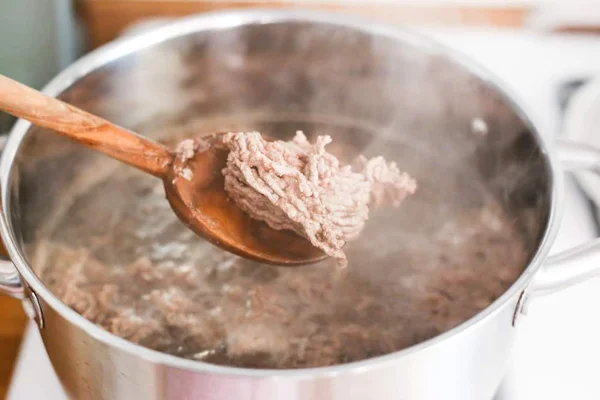

History of Nasi Krawu
Nasi Krawu adalah makanan khas Gresik yang sudah ada sejak ratusan tahun lalu. Hidangan ini dulunya dikenal sebagai makanan rakyat yang disajikan untuk para pekerja karena porsinya yang mengenyangkan dan bumbunya yang khas. Nama
"krawu" berasal dari cara penyajiannya yaitu nasi yang disajikan dengan lauk-pauk menggunakan tangan langsung.
Berdasarkan kisah turun-temurun, Nasi Krawu biasanya dijual oleh penjual perempuan yang membawa dagangannya menggunakan tenggok atau anyaman bambu besar yang digendong di bahu. Mereka berkeliling dari kampung ke kampung sambil
menyajikan hidangan ini langsung di atas daun pisang. Keunikan lain dari Nasi Krawu terletak pada lauk-pauknya, seperti daging sapi suwir, serundeng kelapa, jeroan, hingga sambal petis yang memiliki rasa khas perpaduan gurih,
manis, dan pedas. Cita rasa inilah yang menjadikan Nasi Krawu berbeda dari hidangan nasi lainnya dan mampu bertahan lintas generasi.
Recipe
Cara memasak Nasi Krawu langkah demi langkah:
Step 1: Rebus & Suwir Daging

Rebus daging sapi hingga empuk, lalu suwir-suwir menjadi serat halus. Daging ini nantinya akan dibagi menjadi dua bagian untuk bumbu merah dan bumbu kuning.
Step 2: Masak dengan Bumbu Merah
Tumis bumbu merah yang terdiri dari cabai, bawang merah, bawang putih, dan lengkuas. Masukkan daging suwir lalu masak hingga bumbu meresap sempurna.
Step 3: Masak dengan Bumbu Kuning
Haluskan kunyit, ketumbar, dan bawang. Tumis hingga harum, lalu masukkan bagian daging suwir yang lain. Masak hingga daging berubah warna dan bumbu merata.
Step 4: Serundeng Kelapa
Parut kelapa dan sangrai bersama bumbu halus hingga menjadi serundeng berwarna coklat keemasan. Serundeng ini menjadi pelengkap khas Nasi Krawu.
Step 5: Sajikan
Tata nasi putih pulen di atas daun pisang. Tambahkan daging suwir bumbu merah, daging bumbu kuning, serundeng, dan sambal terasi. Nikmati kelezatan Nasi Krawu khas Gresik!